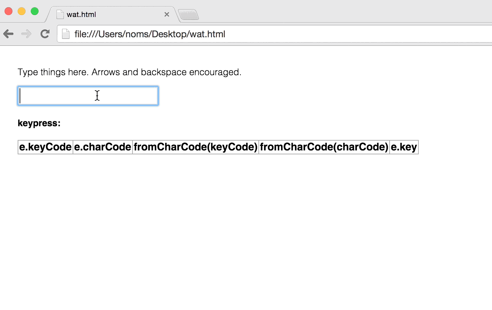
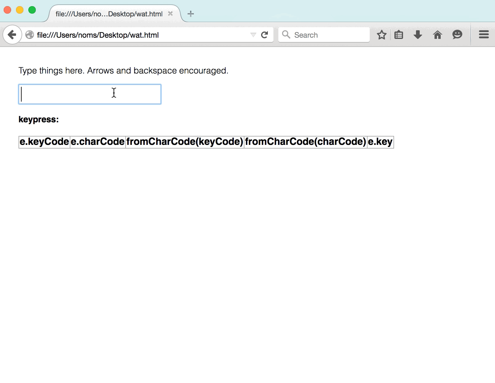

The keypress event works maddeningly differently in Chrome/Safari and Firefox, and this is the story of how I spent two hours discovering that, so that hopefully you don’t have to.
Keypress what?
A keypress event is one of the events you get when you mash on the keyboard. It’s special because according to the spec, you should only get a keypress event for keystrokes that produce printable characters. So you’ll get it for things like letters and symbols, but not for backspace and left arrow.
It’s a great event to have if you want to write some as-you-type validation on an input, and you want to be able to dismiss the non-printable characters (which will still generate key events, but are uninteresting to the validation bit).
Chrome, Safari and IE10 agree with this interpretation, which is great news.
To be contrarian, Firefox (38; I don’t know about Aurora) always sends a keypress event for anything you type. It’s basically a keydown event from what I see. Now you have to get rid of control characters yourself and you get write code that doesn’t make sense on the other platforms! Yay! (not yay)
I call shenanigans.
Mind your keyCodes and charCodes
From looking at the spec, we expect a keypress event to have:
keyCode, a number code that represents the key you’ve pressed. For example,qis113. This is allegedly deprecated, but don’t worry, both Firefox and Chrome implement it, but differently.charCode, the unicode number of the key. This code only exists forkeypress. Like before, it’s deprecated, but like before, it’s implemented by both browsers. Differently.key, the value of the key represented by the event. According to that spec, this one is unimplemented. Worry not, Firefox implements it just fine (Chrome doesn’t). It is the hero we deserve, but not the one we get right now.
😭
What you get out of this is spectacularly annoying. I wrote some code that basically prints out what the keypress event looks like, and found:
- As promised, in Chrome/Safari/IE10, we only get the
keypressevent for printable things. The event always has the same values forkeyCodeandcharCode, and doesn’t have akey.

- In Firefox, you get the
keypressevent for ALL the things, BUT:- for printable characters,
keyCode = 0, andcharCodehas a sane value. - for control characters,
charCode = 0, andkeyCodehas a sane value. - this is super because if you’ve been testing on the other browsers and have been using
String.fromCharCode(), you’re going to get hilariously bad results if you use the wrong code. Like howarrow leftcould actually be%. - see how
keyis kind of nice though? One day, at a browser near you.
- for printable characters,

There, now you know. And knowing is half the battle.
P.S.
If you read this in the future and the future doesn’t work like I said it does, either I was wrong (highly likely), or someone fixed something. Let me know and I can make updates.